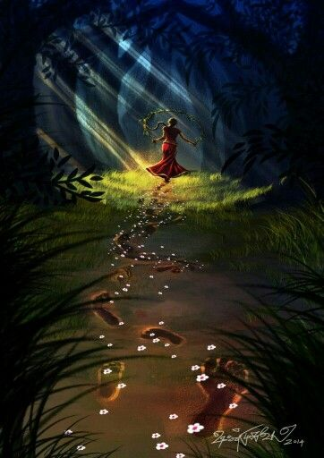

Holi
The Holi festival takes place on the last full moon day of the Hindu lunisolar calendar month. Holi is also known as 'Dol Jatra' or 'Dol Purnima' in West Bengal, and it is commemorated by people arranging the images of Radha and Krishna on a palanquin. It is then celebrated and paraded around the area. People celebrate the occasion by dancing and singing while carrying holy images. Here are some of the people involved!

Krishna
Krishna Plays Holi with the Gopis
In the legends of Krishna as a youth, he is depicted as playing all sorts of pranks with the gopis, or female cowherds. One prank was to throw coloured powder all over them. So on Holi, images of Krishna are often carried through the streets.
Radha
His mother, Yashoda, playfully suggested that he smear some brightly coloured powder on Radha's face. After Krishna did this, Radha fell in love with him. A king with his favourite in a garden with attendants at Holi festival. Painting, Rajasthan School, mid-18th century.
Hiranyakashipu
Holi. One of Hiranyakashipu's attempts to kill his son Prahlada was to have him sit on a burning pyre with his aunt Holika.